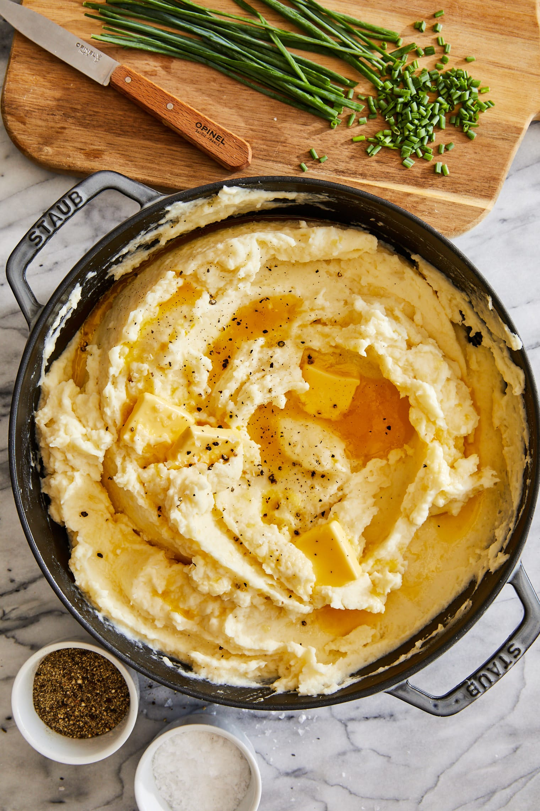

This is a an easy and straight forward mash potato recipe that will never be bland, dry or runny. It really only has five ingredients if you skip the garlic, which I don't reccomend doing, and assuming you already have salt and pepper in your kitchen.
One piece of advice: while the recipe calls for 1/2 cup of butter milk, I'd advise buying more so that you can add it to suit your preference. You might find it too thick if you only add the 1/2 cup. Either way, add it in little by little to ensure it comes out perfect. Remember: in cooking it's always harder to reduce than to add. So make your own life easier and take your time.
Ingridients
6 cups chicken broth
5 lbs. red potatoes, peeled and cut into even-sized pieces
5 cloves garlic, minced or pressed
1/2 cup (1 stick) unsalted butter
4 oz cream cheese/li>
1/2 cup buttermilk
Salt and pepper, to taste
Instructions
Boil the Potatoes in Chicken Broth: Start by bringing 6 cups of chicken broth to a boil. This is a secret tip to enhance the flavor of your potatoes while preventing them from turning brown due to oxidation. Add your red potato pieces to the boiling broth and cook them until they are fork-tender, usually around 15-20 minutes..
Mash and Add Flavor: Once the potatoes are cooked, drain them and return them to the pot. Use a potato masher or a garlic press to create a smooth, lump-free consistency. The next step is to incorporate the minced or pressed garlic for a delicious flavor punch.
Creamy Goodness: Cut your unsalted butter into smaller pieces and add them to the potato mixture. Continue to mix until the butter is completely melted, creating a rich and creamy base. Then, introduce the cream cheese to the mixture, ensuring that it’s well combined and further enhancing the velvety texture of the potatoes.
Perfecting the Texture: Now it’s time to add buttermilk in small increments, adjusting as needed until you reach the desired creamy consistency.
Season to Taste: To elevate the taste even more, season your mashed potatoes with salt and pepper. Start with a pinch or two and adjust according to your personal preference.